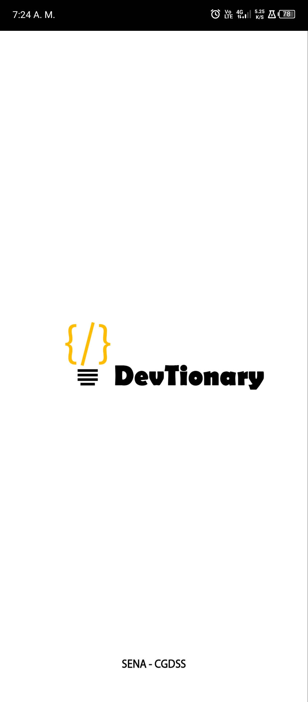
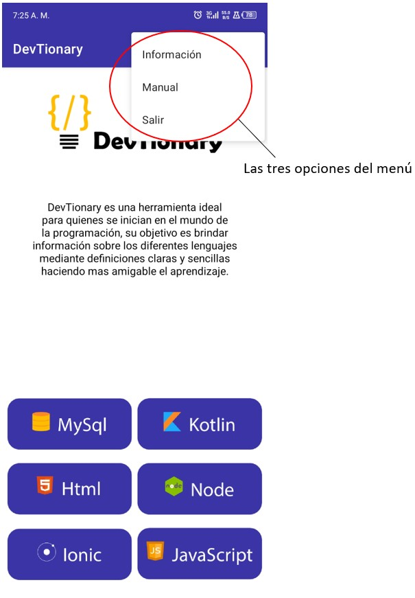

Manual de Usuario
Manual de Usuario
Este manual tiene como objetivo explicar el paso a paso de forma gramática y visual la aplicación DevTionary, donde encontraras etiquetas de programación y vocabulario con definiciones claras y sencillas.
Esperamos que su experiencia leyendo este manual sea lo más cómoda posible y despeje todas las dudas que surjan al usar esta aplicación.
Acceso a la aplicaión
DevTionary (Diccionario para desarrolladores)
Aplicación móvil diseñada para desarrolladores que buscan términos en diferentes lenguajes de programación (MySQL, Node, Kotiln, Html5, Ionic, javaScript) con una breve y clara descripción de su funcionamiento. La aplicación está diseñada en dos idiomas (español e inglés) , el idioma se determina dependiendo de la configuración del idioma del teléfono.
Uso de la aplición
La aplicación se identifica con el icono que se muestra en la figura uno, la cual debe estar previamente instalado en el dispositivo móvil, en la figura dos se aprecia una breve animación (splash) la cual lo direccionará a la pantalla principal.
Figura 1 DevTionary

Figura 2 Splash
En la pantalla principal se puede observar en la parte superior izquierda el nombre de la aplicación y en la parte derecha el menú de la aplicación como se aprecia en la imagen tres, en la parte intermedia de la pantalla se observar una breve descripción de la aplicación y en la parte inferior se puede observar las diferentes categorías de lenguajes de programación que tiene la aplicación de forma predeterminada (MYSQL, KOTLIN, NODE, HTML5, IONIC, JAVASCRIPT).

Figura 3 Vista principal
En la figura cuatro se aprecia el menú con un icono de tres puntos con tres opciones, la primera opción es la información de los desarrolladores de la aplicación, en la segunda opción se visualiza el manual de usuario de la aplicación y en la tercera opción se observa el botón salir de la aplicación

Figura 4 Vista breve del menú
Al momento de dar clic en la primera opción (información) del menú se observa una breve descripción sobre los desarrolladores de la app, la segunda opción (manual) del menú se puede visualizar el manual de usuario de la aplicación, tal como se muestra en las siguientes figuras.
Figura 5 Vista del menú de información
Figura 6 Vista del menú de información
Al momento de seleccionar un lenguaje de programación el sistema lo dirige al detalle de la categoría tal como se muestra en la figura 7 donde se puede observar una barra de búsqueda de palabras teniendo en cuenta las palabras adicionadas al diccionario, la aplicación adicionalmente muestra una breve descripción de la palabra con su respectivo ejemplo, el icono

permite copiar todo el contenido de la palabra buscada para poder llevarlo donde sea necesario.
La barra de búsqueda tiene la opción de volver a mostrar todas las palabras eliminando el texto y presionando el icono de búsqueda

Figura 7 Palabras y búsqueda
Al realizar una búsqueda de una palabra especifica, el sistema mostrara el nombre de la palabra, la descripción y un ejemplo, tal como se muestra en la siguiente figura.

Figura 8 Vista de las palabras con su ejemplo
Regresar